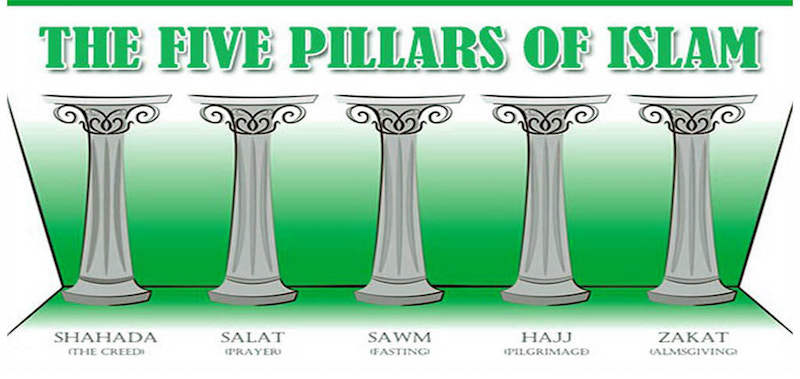
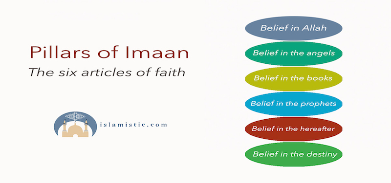
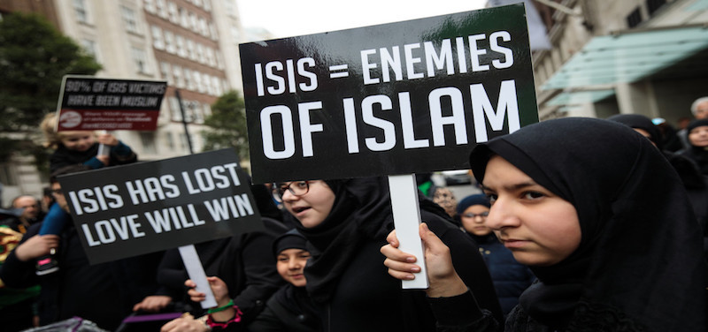
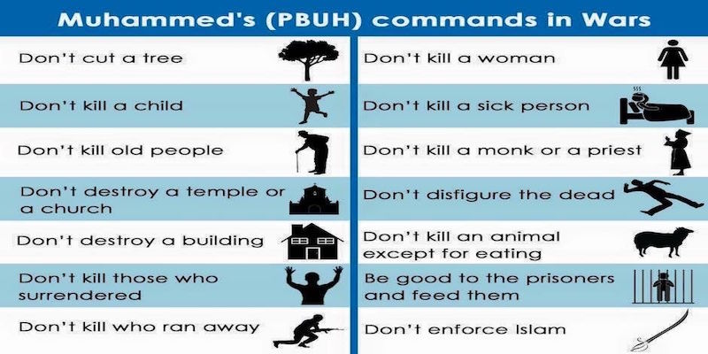
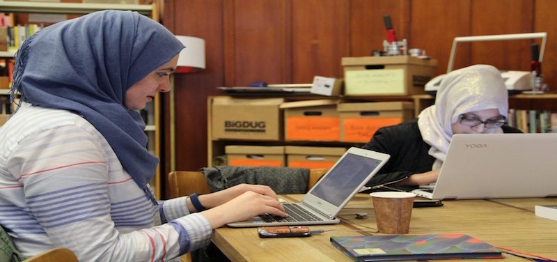

Content
- Islam
- The Pillars of Islam
- The Articles Of Faith
- Islam condemns violence
- Jihad
- Women In Islam
- Was Islam spread by the sword?
ISLAM
.jpg)
Islam is derived from the word ‘salaam’ which means peace. It is a religion of peace whose fundamentals teach its followers to maintain and promote peace throughout the world. Thus every Muslim should be a fundamentalist i.e. he should follow the fundamentals of the Religion of Peace: Islam. He should be a terrorist only towards the antisocial elements in order to promote peace and justice in the society.
The Pillars of Islam
- Shahada- the testimony of faith. “I bear witness that there is no God but Allah, and that Mohammad is his last messenger.
- Salat- Prayer, which is offered five times a day.
- Sawm- fasting, which is observed from dawn until dusk during the Islamic month of Ramadan.
- Zakat- Charity. This requires the annual giving of a fixed amount of personal assets for the benefit of the poor, the incapacitated, and the deprived.
- Hajj- Pilgrimage to Mecca. All able bodied Muslims
should perform pilgrimage at least once in their lifetime.
The Hajj is performed at Mecca. According to The
Qur’an, the Prophet Abraham is the father of all prophets and his son Ishmael built the Kaaba.
The Articles Of Faith
- Belief in Allah, the one and only God, the creator of all human beings, the God of Jesus, Moses and Mohammad.
- Belief in the Prophets and the messengers of Allah - Adam, Noah, Jacob, Isaac, Jesus, Moses, the last Prophet Mohammad, as well as many other prophets.
- Belief in the books of revelation sent by Allah - the Psalms Torah, Bible, and the Qur’an.
- Belief in the angels of Allah. The Qur’an was revealed to Mohammad through Angel Gabriel. Other angels include Michael, who was the first to bow down before Adam, as well as the angels that revealed the Bible to Jesus and the Torah to the Moses.
- Belief in the Day of Judgment. Muslims believe in the Day of Judgment, as well as Heaven and Hell. All believers will be rewarded for good deeds and punished for the bad ones.
- Belief in Allah’s fore knowledge. This means the allknowing nature of God
Islam condemns violence

Islam condemns terrorism and the killing of innocent lives. The
word terrorism and Islam are contradictory. One cannot be a true
Muslim and terrorist at the same time.
The Qur’an states, “Who so
ever kills a human being…it shall be as if he has killed all
mankind and who so ever saves the life of one, it shall be as if he
had saved the life of all mankind” (The Qur’an 5:32). Suicide is
also a grave sin in Islam. Only God has the right to give and take
life
Jihad

The word jihad has its origin in the verb jahada, which means to
struggle. The word has a few different connotations, since
struggle can occur on several levels. For most Muslims, it is an
intimate struggle to purify the soul of satanic influence, or inner
struggle of the soul to obey what God has said is good and forbid
what is evil, speaking of truth in the face of a tyrant, and to defend
against oppression.
This self-defense aspect of jihad has been
grossly misunderstood in today's world. The Qur’an and teaching
of Islam have placed severe restrictions on the later form of Jihad.
When fighting, Muslims are required to follow strict rules of
warfare and spare unarmed people. Killing innocent civilians,
women, children and the old is strictly prohibited. In addition,
Muslims are not to destroy property, burn crops, pollute water
supply, or cut down trees.
Women In Islam

Islam stresses the equality between men and women. During the
sixth century, when The Qur’an was revealed, Islam liberated
women in many ways, including giving them the right to own
property and to vote. Suffrage for women in Islamic states was
won almost thirteen hundred years before it was in the United
States.
“O Mankind! We created you from a single pair of male and
female and made you into nations and tribes, that you may know
each other. Verily the most honored of you in the sight of Allah is
one who is the most righteous of you. And Allah has the full
knowledge and is well acquainted (with all things)”(The Qur’an
49:13).
Nowhere does the Qur’an state that one gender is superior to
the other. The Qur’an makes it clear that sole basis for
superiority of any person over another is piety and
righteousness, not gender, color or nationality.
The Muslims use the Qur’an as Islamic law with the Hadith,
the words and practices of our Prophet Mohammed (Peace be
upon him). Some of the Prophet’s Hadith’s are:
“The best of you is he who is best to his wife”.
“Paradise is under the feet of the mothers”.
Muslim scholars have insisted that education is not only a
right, but also a religious obligation on all Muslim men and
women.
Finally, it should be stated first that Islam regards her role in
society as a mother and a wife as her most sacred and essential
one. There is no decree in Islam that forbids women from
seeking employment whenever there is a necessity for it,
especially in which society needs her . Examples of these
professions are nursing, teaching, medicine and social and
charitable work. Moreover, there are no restrictions on
benefiting from women’s talent in any field as demonstrated
by the Prophet’s wife, Khathidja, who as a businesswoman,
employed the Prophet earlier in his life and later proposed
marriage to him.
Was Islam spread by the Sword?

Question:
How can Islam be called the religion of peace when it was spread by the sword?
Answer:
It is a common complaint among some non-Muslims that Islam would not have millions of adherents all over the world, if it had not been spread by the use of force. The following points will make it clear, that far from being spread by the sword, it was the inherent force of truth, reason and logic that was responsible for the rapid spread of Islam.
1. Islam means peace.
Islam comes from the root word ‘salaam’, which means peace. It also means submitting one’s will to Allah (swt). Thus Islam is a religion of peace, which is. acquired by submitting one’s will to the will of the Supreme Creator, Allah (swt).
2. Sometimes force has to be used to maintain peace.
Each and every human being in this world is not in favour of maintaining peace and harmony. There are many, who would disrupt it for their own vested interests. Sometimes force has to be used to maintain peace. It is precisely for this reason that we have the police who use force against criminals and antisocial elements to maintain peace in the country. Islam promotes peace. At the same time, Islam exhorts it followers to fight where there is oppression. The fight against oppression may, at times, require the use of force. In Islam force can only be used to promote peace and justice.
3. Opinion of historian De Lacy O’Leary.
The best reply to the misconception that Islam was spread by the sword is given
by the noted historian De Lacy O’Leary in the book of ’Islam at the cross road’
(Page 8):
’History makes it clear however, that the legend of fanatical Muslims sweeping
through the world and forcing Islam at the point of the sword upon conquered races
is one of the most fantastically absurd myth that historians have ever repeated.’
4. Muslims ruled Spain for 800 years.
Muslims ruled Spain for about 800 years. The Muslims in Spain never used the sword to force the people to convert. Later the Christian Crusaders came to Spain and wiped out the Muslims. There was not a single Muslim in Spain who could openly give the adhan, that is the call for prayers.
5. 14 million Arabs are Coptic Christians.
Muslims were the lords of Arabia for 1400 years. For a few years the British ruled, and for a few years the French ruled. Overall, the Muslims ruled Arabia for 1400 years. Yet today, there are 14 million Arabs who are Coptic Christians i.e. Christians since generations. If the Muslims had used the sword there would not have been a single Arab who would have remained a Christian.
6. More than 80% non-Muslims in India.
The Muslims ruled India for about a thousand years. If they wanted, they had the power of converting each and every non-Muslim of India to Islam. Today more than 80% of the population of India are non-Muslims. All these non-Muslimn Indians are bearing witness today that Islam was not spread by the sword.
7. Indonesia and Malaysia.
Indonesia is a country that has the maximum number of Muslims in the world. The majority of people in Malaysia are Muslims. May one ask, ’Which Muslim army went to Indonesia and Malaysia?’
8. East Coast of Africa.
Similarly, Islam has spread rapidly on the East Coast of Africa.
One may again ask,
if Islam was spread by the sword, ’Which Muslim army
went to the East Coast of Africa?’
9. Thomas Carlyle.
The famous historian, Thomas Carlyle, in his book ’Heroes and Hero worship’, refers to this misconception about the spread of Islam: ’The sword indeed, but where will you get your sword? Every new opinion, at its starting is precisely in a minority of one. In one man’s head alone. There it dwells as yet. One man alone of the whole world believes it, there is one man against all men. That he takes a sword and try to propagate with that, will do little for him. You must get your sword! On the whole, a thing will propagate itself as it can.’
10. No compulsion in religion.
With which sword was Islam spread? Even if Muslims had it they could not use it to spread Islam because the Qur’an says in the following verse: ’Let there be no compulsion in religion: Truth stands out clear from error’ [Al-Qur’an 2:256]
11. Sword of the Intellect.
It is the sword of intellect. The sword that conquers the hearts and minds of people. The Qur’an says in Surah Nahl, chapter 16 verse 125: ’Invite (all) to the way of thy Lord with wisdom and beautiful preaching; and argue with them in ways that are best and most gracious.’ [Al-Qur’an 16:125]
12. Increase in the world religions from 1934 to 1984.
An article in Reader’s Digest ‘Almanac’, year book 1986, gave the statistics of the
increase of percentage of the major religions of the world in half a century from 1934 to 1984.
This article also appeared in ‘The Plain Truth’ magazine.
At the top was Islam, which increased by 235%, and Christianity had increased only by 47%.
May one ask, which war took place in this century which converted millions of people to Islam?
13. Islam is the fastest growing religion in America and Europe.
Today the fastest growing religion in America is Islam. The fastest growing religion in Europe in Islam. Which sword is forcing people in the West to accept Islam in such large numbers?
14. Dr. Joseph Adam Pearson.
Dr. Joseph Adam Pearson rightly says, ’People who worry that nuclear weaponry will one day fall in the hands of the Arabs, fail to realize that the Islamic bomb has been dropped already, it fell the day MUHAMMED (pbuh) was born’
By Dr. Zakir Naike in his book (Islam and terrorism)
Back to Top contact me here!